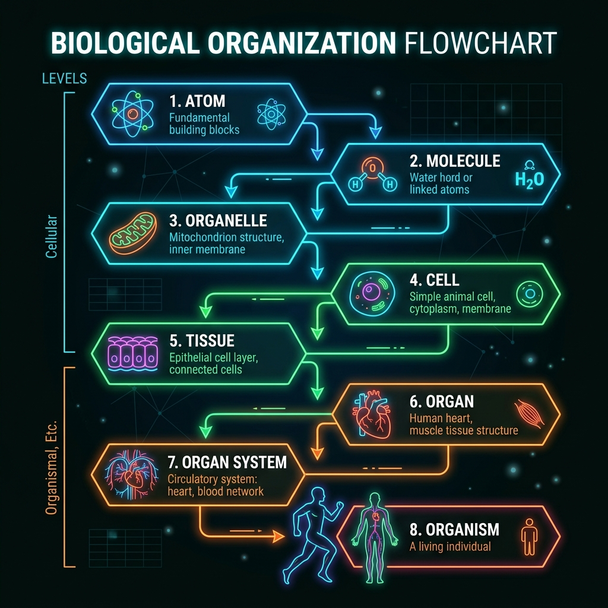

De lo simple a lo complejo
La materia viva no es un conjunto caótico de átomos y moléculas. Está organizada en niveles jerárquicos, cada uno con propiedades nuevas que no existían en el nivel anterior. A esto se lo llama propiedades emergentes: el todo es más que la suma de sus partes.
Entender los niveles de organización es fundamental en Biología porque permite estudiar la vida desde distintas perspectivas: desde lo más pequeño (átomos y moléculas) hasta lo más grande (ecosistemas y biosfera). Cada nivel tiene sus propias reglas y requiere herramientas distintas para ser estudiado.
Los niveles de organización biológica
Átomo
La unidad más pequeña de un elemento químico. Los principales átomos en los seres vivos son: carbono (C), hidrógeno (H), oxígeno (O), nitrógeno (N), fósforo (P) y azufre (S). Forman el 99% de la materia viva.
Molécula
Unión de dos o más átomos. Ejemplos en los seres vivos: agua (H₂O), glucosa (C₆H₁₂O₆), proteínas, lípidos, ácidos nucleicos (ADN, ARN). Las macromoléculas como el ADN contienen la información genética.
Célula
La unidad básica de la vida. Primer nivel con vida propia. Puede ser procariota (bacteria) o eucariota (neurona, célula muscular, célula epidérmica). Todas las funciones vitales ocurren dentro de ella.
Tejido
Conjunto de células similares que realizan una función común. Ejemplos: tejido muscular (contracción), tejido nervioso (transmisión de impulsos), tejido epitelial (revestimiento), tejido conectivo (sostén).
Órgano
Estructura formada por varios tejidos que trabajan juntos para cumplir una función específica. Ejemplos: corazón (tejido muscular + conectivo + nervioso), estómago, pulmón, hoja (en plantas), raíz.
Sistema de órganos
Conjunto de órganos que cooperan para realizar una función compleja. Ejemplos: sistema digestivo (boca, esófago, estómago, intestinos), sistema circulatorio (corazón, arterias, venas), sistema nervioso.
Organismo
Un individuo completo formado por todos los sistemas funcionando de manera integrada. Puede ser unicelular (una bacteria) o pluricelular (un ser humano, un árbol). Es el nivel donde el ser vivo interactúa con su ambiente como una unidad.
Nota: más allá del organismo, existen niveles superiores: población, comunidad, ecosistema, bioma y biosfera. Esos los exploramos en la unidad de Seres Vivos y Ecosistemas.
Un recorrido por el cuerpo humano
Veamos cómo se aplican los niveles de organización usando un ejemplo concreto: el sistema que late en tu pecho en este mismo momento. El sistema circulatorio ilustra perfectamente cómo la materia se va organizando desde lo microscópico hasta el organismo completo.

Del Átomo al Organismo: Ejemplo del Sistema Circulatorio
Este mismo recorrido puede hacerse con cualquier sistema del cuerpo o con una planta. Por ejemplo, en una planta: célula vegetal con cloroplastos → tejido de parénquima → hoja (órgano) → sistema de hojas o sistema radicular → planta completa (organismo).
La clave está en entender que cada nivel se construye sobre el anterior. Sin átomos no hay moléculas; sin moléculas no hay células; sin células no hay tejidos. Pero también es cierto que cada nivel tiene propiedades que no pueden explicarse solo mirando el nivel inferior. Esta es la magia de la organización biológica.
Preguntas para pensar
1. ¿Por qué decimos que la célula es el primer nivel con vida? ¿Está vivo un átomo de carbono? ¿Y una molécula de ADN por sí sola? Justificá tu respuesta usando los 7 criterios de la vida.
2. Elegí otro sistema del cuerpo humano (digestivo, respiratorio, nervioso) y trazá su recorrido completo por los niveles de organización, desde el átomo hasta el organismo.
3. ¿Qué nivel de organización falta en un organismo unicelular como una bacteria? ¿Significa eso que es menos complejo o simplemente está organizado de otra manera?